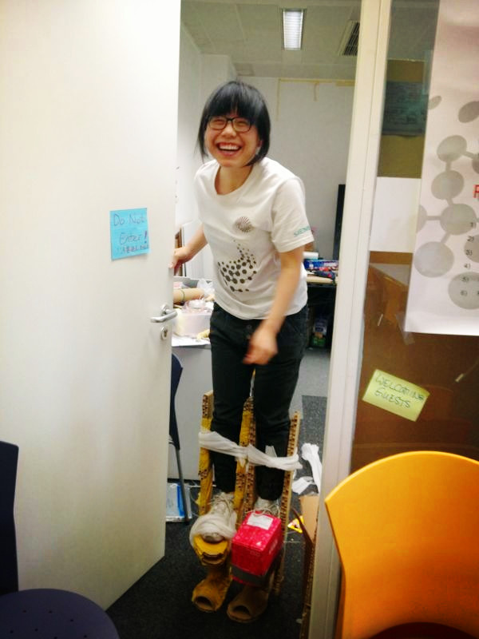

 That’s me, wearing my low-resolution prototype of stilts for preparation of a warm-up exercise designed for the new trainees in my former innovation lab.
And this is my personal website containing mainly a portfolio of tangible prototypes from my past projects and a blog of my life journey. I’m a dedicated hands-on innovation seeker and creative learning coach, and I love building up experience from thoughts-exchanging with people from different disciplines.
To learn more about me, feel free to reach me HERE. Thank you. Back to top© All rights reserved. | Design by Xiao Ge built up on TEMPLATED.